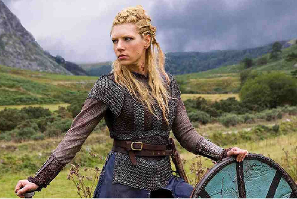

Katheryn Winnick (Etobicoke, 17 de dezembro de 1977), é Lagertha, a primeira esposa de Ragnar Lothbrok. Ela é uma Earl (título equivalente a Conde), uma forte shieldmaiden (“escudo-donzela”) e junto com suas guerreiras é uma força indispensável para qualquer invasão viking. Sua principal característica é que ela sempre lutou na parede do escudo ao lado dos homens. Embora o destino a tenha levado para longe da cama de Ragnar, parece que os deuses tem um plano para eles, pois sempre estão juntos, pelo menos nas batalhas.